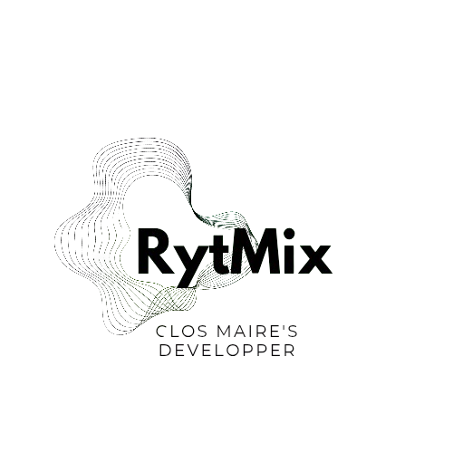

En Première, nous avons participé aux Trophées NSI avec mon groupe composé de Benjamin Michalak et Angel Sanchez. Nous avons créé un jeu à base d'un séquenceur Python, où le principe était de reconstruire la mélodie jouée. Sur ce projet, j'ai été le directeur artistique et j'ai aidé à la résolution de pas mal de bugs.
J'ai donc, pour faciliter la tâche de développement, choisi un aspect en nuances de gris, avec uniquement du vert sur les boutons cliqués, et du rouge pour la barre montrant quel temps était joué. Cela donnait un aspect simple, mais efficace, à ce projet.
Notre Séquenceur a donc remporté le prix de la région Bourgogne-Franche-Comté du thème (qui en 2025 était l'Art) dans la catégorie classe de Première. Nous n'avons malheureusement pas gagné d'autre prix, mais notre groupe est plutôt satisfait de cette victoire. Suite au concours, nous avons continué à améliorer le projet de notre côté, afin de résoudre les problèmes qui étaient encore présents, et encore un peu soigner l'interface du séquenceur libre, qui avait été, il faut le dire, assez peu soignée, car ajoutée en dernière minute. Cependant, le projet était tout de même parfaitement fonctionnel, et la difficulté de résolution était plutôt élevée pour les niveaux les plus durs.